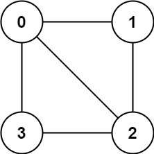

785. Is Graph Bipartite?
Medium
There is an undirected graph with n nodes, where each node is numbered between 0 and n - 1. You are given a 2D array graph, where graph[u] is an array of nodes that node u is adjacent to. More formally, for each v in graph[u], there is an undirected edge between node u and node v. The graph has the following properties:
- There are no self-edges (
graph[u]does not containu). - There are no parallel edges (
graph[u]does not contain duplicate values). - If
vis ingraph[u], thenuis ingraph[v](the graph is undirected). - The graph may not be connected, meaning there may be two nodes
uandvsuch that there is no path between them.
A graph is bipartite if the nodes can be partitioned into two independent sets A and B such that every edge in the graph connects a node in set A and a node in set B.
Return true if and only if it is bipartite.
Example 1:
Input: graph = [[1,2,3],[0,2],[0,1,3],[0,2]] Output: false Explanation: There is no way to partition the nodes into two independent sets such that every edge connects a node in one and a node in the other.
Example 2:

Input: graph = [[1,3],[0,2],[1,3],[0,2]]
Output: true
Explanation: We can partition the nodes into two sets: {0, 2} and {1, 3}.
Constraints:
graph.length == n1 <= n <= 1000 <= graph[u].length < n0 <= graph[u][i] <= n - 1graph[u]does not containu.- All the values of
graph[u]are unique. - If
graph[u]containsv, thengraph[v]containsu.